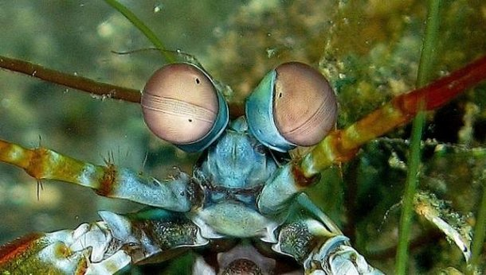
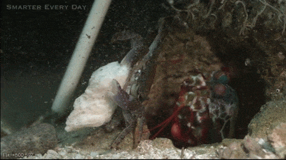

Uma explosão de cores
 As lagostas-boxeadoras possuem o sistema de visão mais completo e complexo do reino animal, podendo enxergar a combinação de 12 cores primárias. A título de comparação, o olho humano é capaz de enxergar na ordem de 1 milhão de cores diferentes, uma vez que nossos olhos são dotados de 3 receptores que captam a luz azul, vermelha e verde. Os estomatópodes, por sua vez, são dotados de 16 receptores, sendo 12 cones sensíveis a luz e outros 4 com a função de filtrar os raios luminosos. Essa combinação confere ao animal a capacidade de enxergar na ordem de 1 septilhão de cores, além de serem capazes de enxergar cores polarizadas e imagens multiespectrais
O Super-soco
 Apesar de possuirem um tamanho que varia entre 15 e 30cm, essas lagostas são consideradas como um dos animais mais violetos do planeoto. As espécies são dotadoas de duas patas dianteiras que, quando acionadas, são capazes de desferir golpes com a mesma aceleração de uma arma de calibre .22, com uma força de impacto equivalente a incriveis 60 Kg/cm³ !! Todo o processo ocorre em menos de 1/3.000 de segundo. A título de comparação, se um humano fosse capaz de acelerar os braços com 1/10 desse poder, o mesmo seria capaz de lançar uma bola de baiseball em órbita ao redor do planeta.